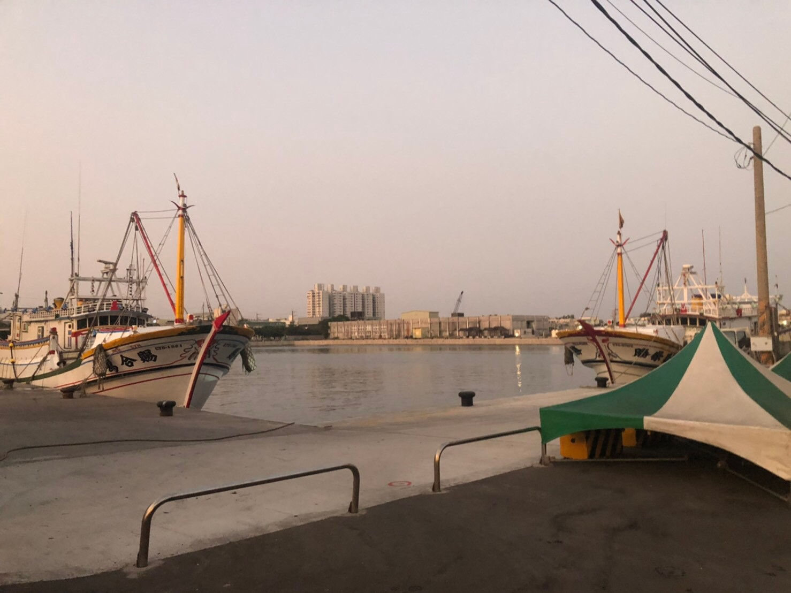

秋冬旅遊補助
9-12月最高省2000
高雄市興達港
<興達漁港> 興達漁港緊臨情人碼頭，原本傳統的漁村在結合地方特色與觀光休閒文化後，轉化成新興的現代漁港。興達港為近海漁港，小型船隻於深夜凌晨出海，接近中午時分返港下貨拍賣，現撈的肉魚、白帶、馬加、午仔魚等等鮮美可口，是臺灣人最喜愛的餐桌魚鮮。而最負盛名是有海上黑金之稱的烏魚，每年冬至前後的烏魚季，烏魚子、魚乾、魚膘及烏魚胗為茄萣帶來巨大的經濟利益。民眾在此可以參觀漁船卸貨及批發過程，也可買到鮮美海味回家大快朵頤。 <興達港觀光漁市> 位於興達港漁會大樓前的觀光漁市，每到漁船返港交易完畢的黃昏時刻，大批的生鮮的攤販進駐，市場販賣著各式「現撈仔」漁獲，包含：各式鮮魚、活蝦、貝類及活蟹..等，還有各式香味撲鼻的海味小吃、熟食讓人開懷嚐鮮，茄萣的特產烏魚子、香魚片、扁魚乾、魚翅及魚皮更是遊客最愛的伴手禮，逛完黃金海岸、情人碼頭，不妨來觀光漁市享受平價美食與採購的樂趣。 <濱海公園> 茄萣濱海公園位在台17線濱海公路旁，佔地約5公頃左右，長900公尺的海岸線遍植優美的木麻黃防風林及欖仁樹，並有完善的觀景平台及遊樂、健身器材共遊客使用，濱海公園串連興達港、茄萣濕地、情人碼頭等景點，民眾可以騎著自行車或步行來此戲水遊玩或觀賞一望無際的海岸風光，尤其是夕陽西下時，海面上金光點點映照著滿天彩霞，看之心曠神怡、無限暢快。
相關資訊
電話
+886-7-3475317
地址
高雄市茄萣區大發路88號
開放時間
11：00 ~ 19：00
票價資訊
免費